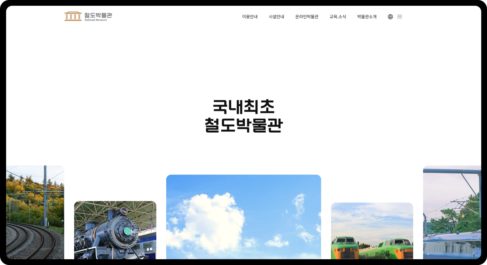
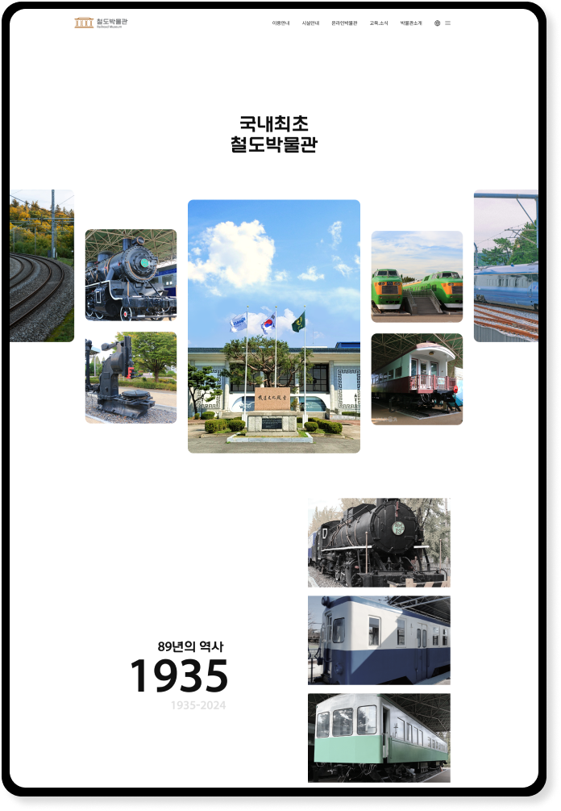
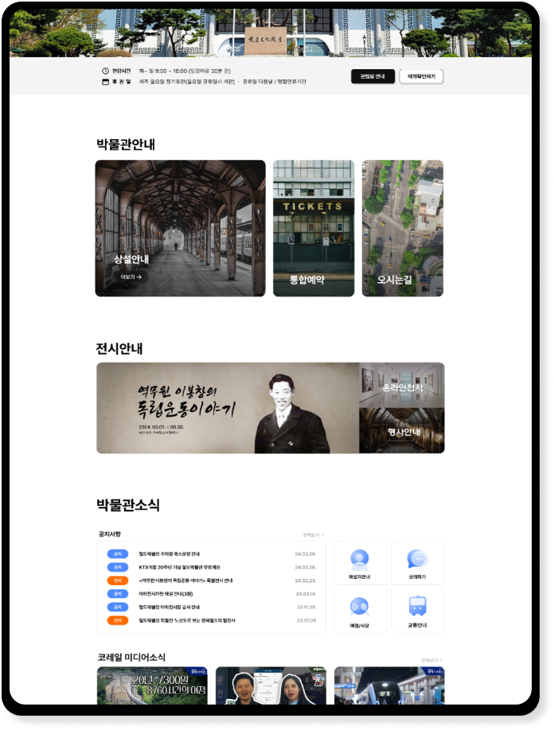
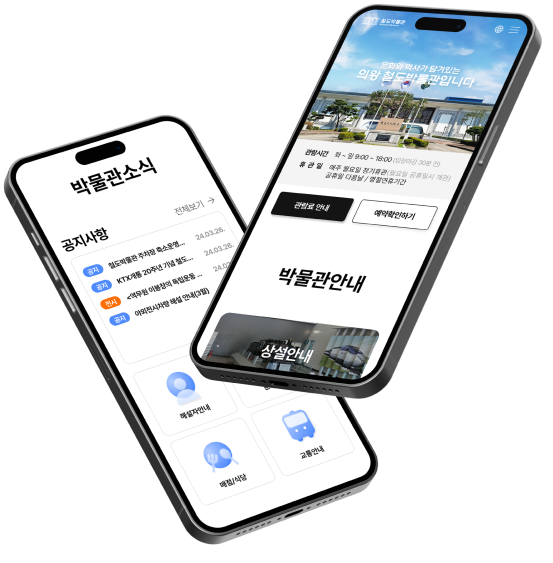

Railroad Museum
UI.UX WebDesign
01철도박물관(반응형)리뉴얼 설계&구현
철도박물관은 국내 최초로 만들어졌으며 89년의 역사를 지닌 박물관입니다. 그만큼 국내최초라는 점과 오랜역사를 가지고 있다는 것을 강조하여 호기심을 이끌고자 하였고 대상 타켓으로는 유치원,초등학교와 어린자녀가 있는 가정, 기차를 좋아하고 관심있어하는 매니아층을 대상으로 기획 했습니다.

02

개선방향 & UI.UX
기존 철도박물관홈페이지는 필요한 정보가 한곳에 글로만 모여있다보니 시각적인 흥미도 떨어지고 UX의 각 정보의 영역에 구분이 모호한 점을 개선하고자 영역마다 제목을 주고 구간을 나누어 어떤 정보를 제공하는지 고객이용에 편리성을 주고자 정보재배치를 하였고 도입부에 호기심을 자극할 역동적인 스크롤 효과를 넣어 시각적으로도 지루하지 않도록 기획했습니다.

03


Typography & Color
Basics
Prenendard M,B
Point
Korail Round Gothic B
#101010
#4E8AFD
#FF6C02
디자인 100%
코딩 100%
작업기간 : 2024. 04. 01. ~ 4. 09.